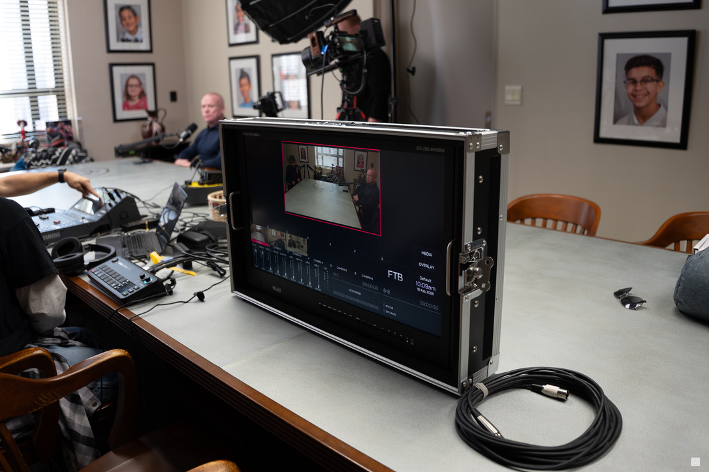

Student-produced · Oklahoma City
STORIES SHAPING OKLAHOMA CITY
VOICES of OKC is a student-produced podcast from City Center featuring leaders, stories, and ideas moving our city forward with depth, dignity, and real access.
A podcast rooted in Oklahoma City.
VOICES of OKC highlights leaders, ideas, and stories shaping Oklahoma City. Each conversation is designed to be thoughtful, grounded, and human.
The show exists not only to spotlight strong voices in our city, but to help students grow through real production experience, meaningful access, and the kind of responsibility that changes what they believe is possible.

Student production
Produced with students. Built for real growth.
VOICES of OKC is more than a podcast. It is a hands-on learning environment where students gain real experience in interviewing, production, audio, camera work, and storytelling. They are not just watching from the sidelines. They are helping make the work happen.



Student hosts
Students are given real opportunities to host, co-host, and ask meaningful questions in live conversations.
Production experience
Camera work, audio, switching, lighting, and setup become practical skills instead of abstract ideas.
Civic access
Students engage leaders across Oklahoma City and learn how thoughtful conversations are built in real rooms.
Long-term impact
The goal is not only content. It is confidence, skill, exposure, and a stronger sense of what students can become.
Featured guests


Voices helping shape the city.
Conversations with civic leaders, founders, mentors, public servants, and voices of hope across Oklahoma City.
Featured conversation
Mayor David Holt
Leadership, youth, and the long work of building a stronger Oklahoma City.
View episode
Student-produced
Jordan Arnett
Student-led hosting and real civic access are part of what makes this platform distinct.
See the story
Behind the scenes
Student Production
Meaningful work happens before the camera rolls and while the room is still learning together.
Student production
Hands-on learning
Camera + Craft
Students learn by doing, not by watching from the edges of the room.
Support the work
Watch + listen
Wherever you are, start here.
Follow the show, watch full conversations, and stay connected as new episodes release.
Support conversations that matter and the students helping produce them.
Sponsoring VOICES of OKC helps amplify meaningful stories in Oklahoma City while investing in real production experience for students growing in skill, confidence, and opportunity.